Cancel the 721 km tomato.
Zero Mile is a free app for growing food at home. Take one photo of your plant a day, and every harvest cancels the trip its shop twin makes. For all ages, with no account.
Open the app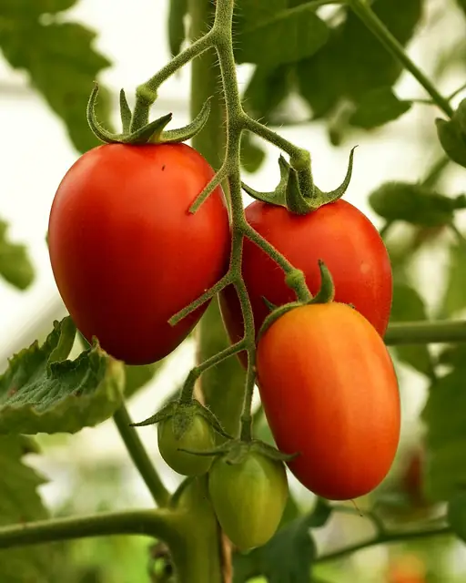
The shop tomato in Ireland comes from Westland in the Netherlands, 721 km away by lorry and ferry.
Find your shop twin
Pick where you live and something to grow. The shop version of every plant comes from a real place, taken from customs and farm statistics. Grow it at home and that trip never happens.
721 km to Dublin as the crow flies, by lorry and ferry.
58% of Ireland's tomato imports come from Westland in the Netherlands (2024).
Source: UN Comtrade: IE imports of HS 070200 by partner, 2024
721
Shop tomato, from Westland, in km
0
Your tomato, from the windowsill, in km
Every trip, cancelled
63 shop twins travel to Dublin. Grown at home, together they cancel 89,216 km.
km cancelled
How it works
-
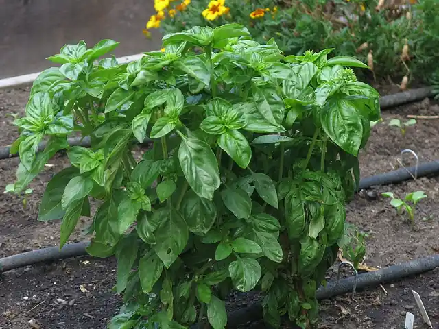
First, plant it
Add a plant: tomato, basil, strawberries or any of 75. Care today says when to sow and water where you live.
-
Then, a photo a day
Take today's photo. Day by day the photos add up to a time-lapse of your plant, like these tomato seedlings.
-
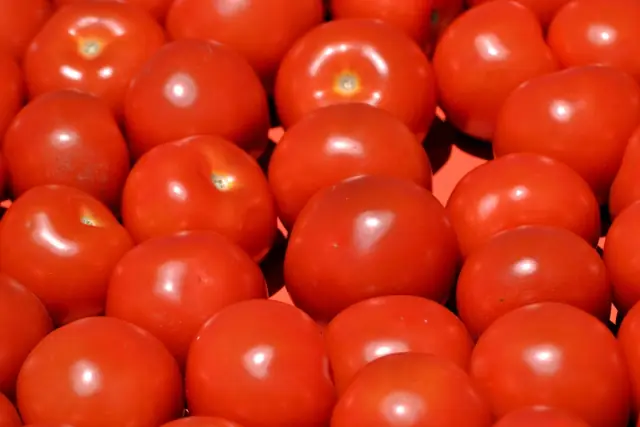
Last, harvest cancels the trip
Log a harvest and its shop twin stays home: 721 km from Westland, added to your km cancelled.
Trees, kept honest
Eight fruit trees have a shop twin, like the apple that reaches Dublin from France. These twelve woodland trees have none: nobody ships birch to eat, so they cancel no trip. Zero Mile counts them by the carbon a grown tree takes up, about 22 kg of CO₂ a year, one general figure from the European Environment Agency, because no tree-by-tree number exists. A sapling takes up far less.
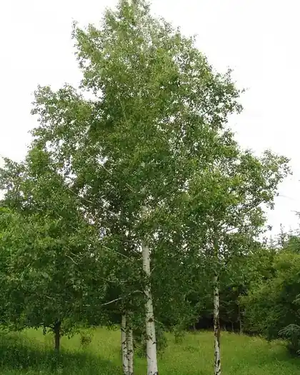
Silver birchUp to 30 m, no shop twin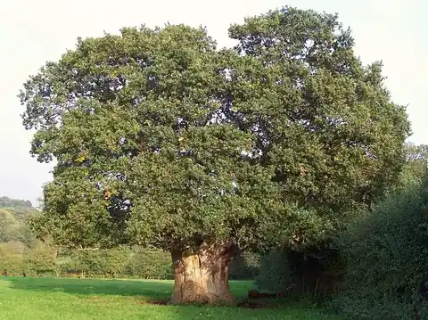
English oak20 to 40 m, no shop twin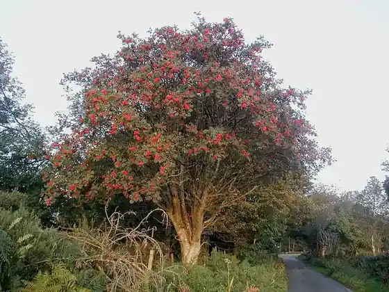
RowanUp to 15 m, no shop twin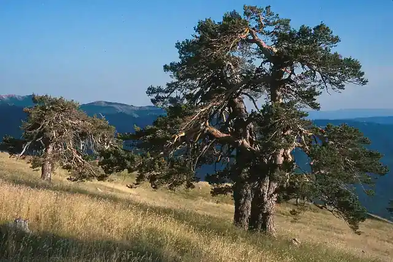
Scots pineUp to 35 m, no shop twin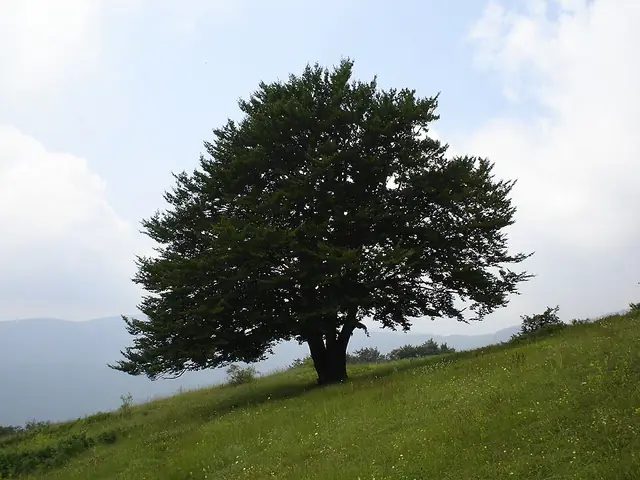
BeechUp to 40 m, no shop twin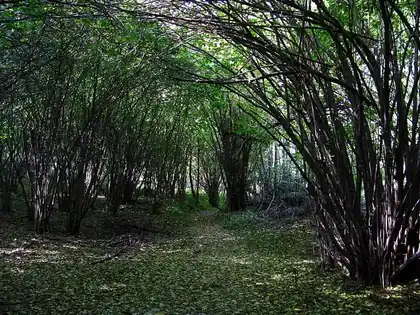
Hazel4 to 8 m, no shop twin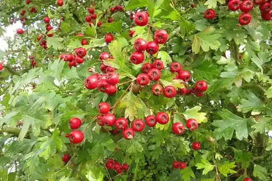
Hawthorn4 to 8 m, no shop twin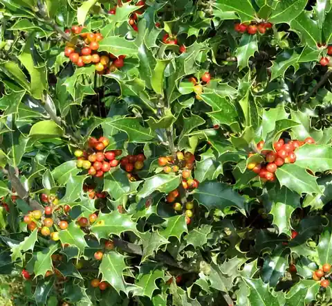
Holly9 to 15 m, no shop twin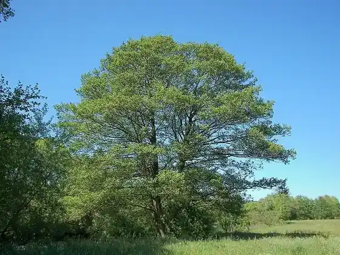
Alder12 to 28 m, no shop twin- Red maple12 to 21 m, no shop twin
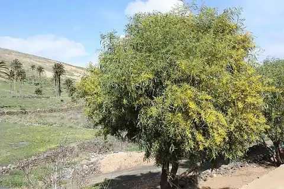
Golden wattle4 to 8 m, no shop twin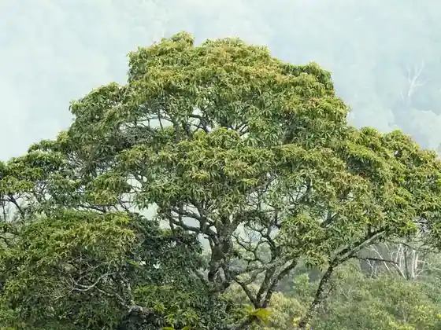
Schima5 to 20 m, no shop twin
Where the numbers come from
Where food comes from: UN Comtrade, Eurostat, FAO, USDA, Defra, Hort Innovation and Hong Kong's AFCD. The trip: DESNZ freight factors. Growing it: Poore & Nemecek.
Where it comes from
For each plant and country, the main supplier in the latest year: the import share from UN Comtrade or Eurostat, or the home-grown share from national statistics. That is 378 routes, each with its sources.
How far
A straight line from the growing area to the main city: Dublin, London, Berlin, Sydney, Hong Kong, and the centre of the US population. Roads run about 1.2 times longer (Ballou and others, 2002), so the km are, if anything, low.
How much CO₂
Each trip uses the 2025 DESNZ and Defra factors for lorry, ship, ferry, train and plane. Growing the food uses Poore and Nemecek (2018). Transport is about a fifth of food emissions (Li and others, 2022).
No account, no ads, nothing to buy.
For parents and teachers
Free
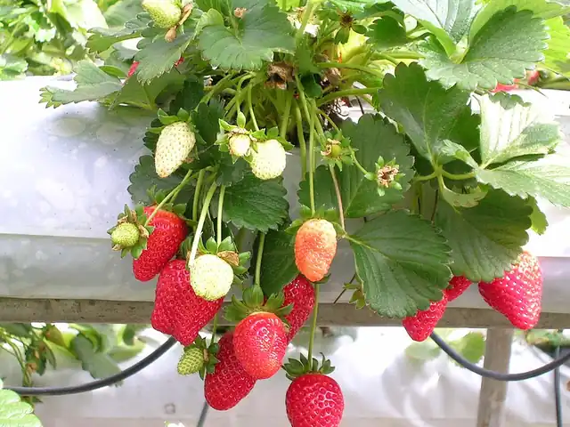
Zero Mile runs in the browser and keeps everything on the device: there is no sign-up and no email, and photos are never uploaded. Plants come with sowing times, care jobs and harvest days for Ireland, the UK, the US, Germany, Hong Kong and Australia. Every number has its source a tap away, so older children can check it while younger ones follow the sticker and the map. In a class, each child can grow one plant and the class can add up the trips it cancels. It installs from the browser like an app and keeps working offline.